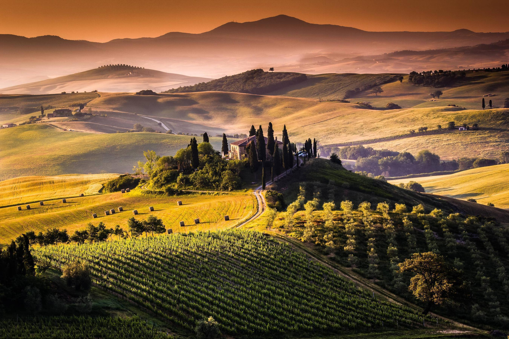

HTML5
Damiano

Liked by 4geeksAcademy, HTML5, Web and 1 other
As a wine enthusiast, I love immersing myself in the flavors, aromas and terroir of the region. Tuscany, Italy, is one of the best for this, with its world-class wines, breathtaking views and brilliant hospitality. While driving around the narrow, twisty roads of Tuscany can be a bit nerve wracking, getting around to these must-visit wineries in Tuscany doesn't have to be difficult.